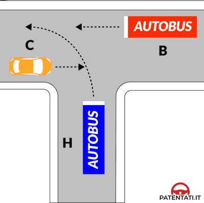

الخوارزمية البصرية الذكية لحسم رسومات التقاطعات الـ 415 بنسبة 100%، وحسم فخ كلمة contemporaneamente في ثوانٍ معدودة.
الترام (Tram) وعربات الطوارئ المشعلة للسرينة تمر أولاً دائماً فوق الجميع أينما وُجدت.
السيارة التي أمامها إشارة قف (STOP) أو إعطاء الأسبقية (Dare Precedenza) تقف وتنتظر خلو التقاطع تماماً.
قف مكان السائق: السيارة ذات اليمين الخالي تماماً (Destra Libera) هي رقم 1، ثم دوران في اتجاه عقارب الساعة للسيارات تباعاً!

⚠️ لماذا هي FALSO بنسبة 87.5%؟ لأن واضع الامتحان يتعمد جمع سيارتين تتقاطع مساراتهما ويدعي أنهما تمران معاً! ✅ الاستثناء الوحيد (4 أسئلة VERO): تكون صحيحة فقط وفقط إذا كانت مسارات السيارتين متوازيتين تماماً ولا تتقاطعان إطلاقاً.